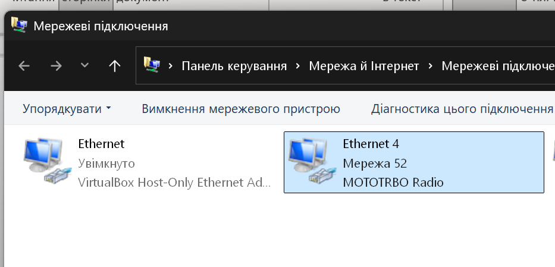
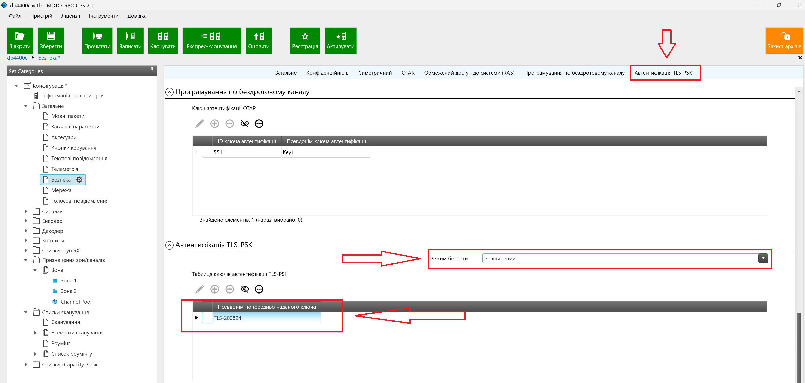

Почнемо з того що «прошивка» і «конфігурування» це різні процеси.
Створення зон, каналів, налаштування кнопок тощо – це конфігурування.
Оновлення ПЗ радіостанції – це прошивка. (версія прошивки актуальна на 23.09.2025р. S02.25.02)
1. Відкриваємо MOTOTRBO CPS 2.0
Перевіряємо версію ПЗ.
Довідка > Відомості (або F2)
На 23.09.2025р версія 2.155.262.0 є останьою.
Якщо версія не відповідає > Оновлюємо CPS ( в «Дніпровській» мережі, переходимо до software.dod.ua, і скачуємо останню версію ПЗ)
2. Під’єднуємо радіостанцію кабелем до АРМ.
Включаємо, чекаємо поки підключиться. Побачити підключену радіостанцію можемо в «мережевих підключеннях». Для цього переходимо в налаштування мережі, або натискаємо WIN + R, вводимо ncpa.cpl, жмем ENTER.

Якщо р/с не підключилась перевіряємо кабель і чи вона включена.
3. Жмем «Прочитати».
Якщо є попередньо збережені codeplug радіостанцій, під’єднувати і «читати» рс не потрібно. Треба «відкрити» codeplug відповідної моделі.
4. Перевіряємо версію програмного забезпечення.
Інформація про пристрій > Версія прошивки
Якщо версія застаріла – оновлюємо прошивку радіостанції!
(версія прошивки актуальна на 23.09.2025р. S02.25.0)
5. Задаємо ID радіопристрою
Загальне > Загальні параметри > ІД радіопристрою
6. Задаємо пароль колдплагу
Загальне > Загальні параметри > Пароль Codeplug
7. Задаємо пароль (ПІН) на включення радіостанції
Загальне > Загальні параметри > Пароль і блокування
Для радіостанцій без дисплея, чотирьохзначний ПІН-код. Перша цифра - від 1 до 9. Останні три це числа 1,2 і три в любій послідовності. Наприклад: 5221, 3212, 8112 і т.д.
8.Безпека
Загальне > Безпека

Ставимо галочки!
Перший пункт відповідає за дешифровку наявного в списку ключа. Якщо
пункт не вибраний ключ буде шукатись серед всіх наявних в
радіостанції. Якщо будемо використовувати Random Key, то не
вказуємо.
Другий пункт відповідає за прийом нешифрованого сигналу.
Ставимо галочку для заборони!
9. Симетричні ключі
Загальне > Безпека > Симетричний
Генеруємо потрібну кількість ключів. (Для використання RandomKey бажано створювати макс. кількість ключів – 32шт.)
Не викристовуйте EXEL для генерації ключів! RAND() / RANDBETWEEN() — не криптографічно стійкі. Вони підходять для простих моделей/симуляцій, але не для генерації криптоключів. В якийсь момент вони можуть бути повністю передбачуваними і, отже, уразливими для атак.
10. Автентифікація TLS-PSK (унеможливлює читання або запис радіостанції)
Загальне > Безпека > Автентифікація TLS-PSK
Не рекомендовано використовувати ім’я ключа DEFAULT. Створіть ключ який будете використовувати в підрозділі.
Обережно користуйтесь цим ключем. При втраті ключа радіостанцію неможливо буде перепрограмувати!
Режим безпеки: Вибираємо "Розширений" для застосування! Режим "Стандартний" не забезпечує використання TLS-PSK.
Всі TLS-PSK зберігаються і створюються в розділі "Керування попередньо наданими ключами" CTRL + K, або Інструменти > Керування попередньо наданими ключами .
11. Системи сигналізації.
Загальне > Системи сигналізації
Перші три пункти відповідають незахищене керування радіостанцією. Будь-хто маючи частоту каналу і id контакту може впливати на радіостанцію!
Тому перші три пункти повинні бути вимкнені!
Для налаштування віддаленого прослуховування/активування/деактивування радіостанції робимо наступне:
«Заборона/скасування автентифікованого радіозв’язку» > Автентифікація користувача
«Автентифікований дистанційний монітор» > Автентифікація користувача
І задаємо «Автентифікований парольна фраза» (мінімум 6 символів)
При виборі «Автентифікація користувача» для безпеки використовується і симетричний і «Автентифікована парольна фраза» яка буде введена з контрольного пристрою з екраном. Наприклад DP 4800e, або DM4601e тощо. Якщо «Автентифікація пристрою» буде використано тільки симетричний ключ. Для заборони цих параметрів обираємо «Вимкнено»
Тривалість дистанційного монітора (с) відповідає за час моніторингу, в секундах.
Для того щоб дистанційно керувати радіостанціями, потрібна радіостанція з екраном.
Контрольну радіостанцію потрібно налаштувати.
Для цього треба виставити відповідні пункти в меню кодплагу.
Загальне > Меню > Контакти
12. Контакти
Контакти > Контакти > +
Створюємо цифровий, груповий контакт з ID виклику.
цифровий > груповий виклик
ID виклику
13. Створюємо канали
Призначення зон/каналів > Зона > Зона1 > + > Цифровий
ЗАГАЛЬНЕ
1.Назва каналу
2. Список сканування/роумінгу (опційно)
3. Колірний код (відповідно до колірного коду каналу вашого ретранслятора)
4. Слот повторювача/часу (Таймслот)
5. Симетричний псевдонім (Для використання Random Key обираємо «Випадково», і прибираємо галочку в «Виправлено дешифрування ключа захисту конфіденційності» пункті 8)
6. Псевдонім RAS (якщо працюємо з ретранслятором)
7. Під’єднання до вузла IP (якщо канал буде використовувати роумінг)
8. RX/TX відповідно до потрібних нам частот.
9. Ім’я контакту (який ми створили для групового виклику)
10. Рівень потужності – низький (для меншого радіосліду. За потребою програмуємо кнопку для перемикання на високий рівень.)
11. Критерій прийнятності, критерій прийнятності
Варіанти
Для "командира":він всіх перериває його ні хто не перериває:
Для «бійця» : його переривають, він нікого не перериває
Для «чергового» перериває всіх крім «командира», командир може його переривати: